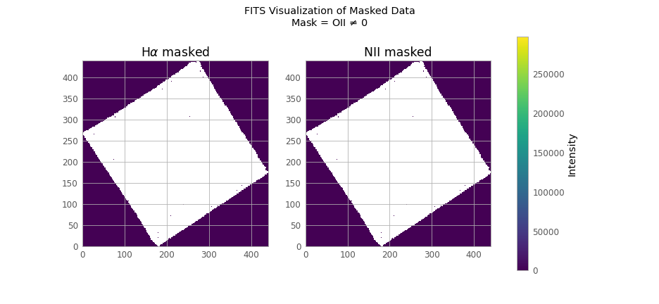
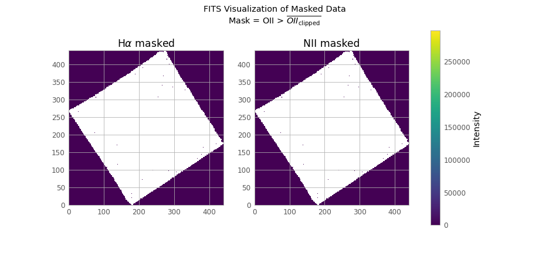
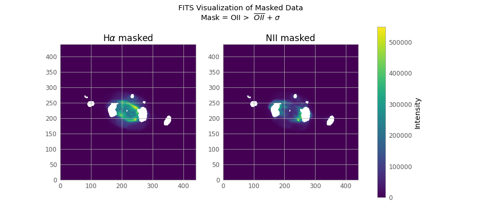

Mask
Table of Contents
1. Open FITS files
from astropy.io import fits import numpy as np from maskfill import maskfill import matplotlib.pyplot as plt from astropy.visualization import astropy_mpl_style from astropy.stats import sigma_clip h1 = fits.open('HI_6563s.fits') o1 = fits.open('O1_6300s.fits') n2 = fits.open('N2_6583s.fits') h1.info() n2.info() o1.info()
None
We don’t use fits.getdata() because this way we can use more functions of the astropy library
1.1. Data of FITS
Each FITS file has only one HDU (Header Data Unit), so we can get the data as follows:
h_data = h1[0].data n_data = n2[0].data o_data = o1[0].data
None
1.2. Close the FITS files
h1.close() n2.close() o1.close()
None
2. Masking the data
2.1. Masking condition
o_clip = sigma_clip(o_data)
o_clip.mean(), o_data.mean(), o_data.std(), o_clip.std()
| 38.624786872821566 | 444.561991585406 | 4104.227141796538 | 73.21818786426948 |
I use the condition mask = o_data > o_data.mean(), because if we use the condition mask = o_data !=0 we get a lot of noise asswell!
If we wanted an even lower threshold then we could sigma clip the odata and get that mean
(I think it is way too low so I will keep the odata)
# Mask condition masks = [o_data!=0, o_data > o_clip.mean(), o_data > o_data.mean(), o_data > o_data.mean() + o_data.std()]
None
2.2. Masking the H and N data
def masked_hn(mask): h_mask = np.ma.masked_where(mask, h_data) n_mask = np.ma.masked_where(mask, n_data) return h_mask, n_mask def vis(mask,name, mask_description): fname = "visualizations/" + name + ".png" labels=[r"H$\alpha$ masked", "NII masked"] plt.style.use(astropy_mpl_style) # Create a figure with 1 row and 2 columns fig, axs = plt.subplots(1, 2, figsize=(12, 6)) for i in range(0,2): im = axs[i].imshow(masked_hn(mask)[i], cmap="viridis", origin='lower') axs[i].set_title(labels[i]) fig.colorbar(im, ax=axs, orientation='vertical',label='Intensity') fig.suptitle("FITS Visualization of Masked Data\nMask = {}".format(mask_description)) plt.savefig(fname) plt.close() return print(fname) def vis_1(mask,dat): plt.style.use(astropy_mpl_style) plt.imshow(masked_hn(mask)[dat], cmap="viridis", origin='lower') plt.colorbar(orientation='vertical',label='Intensity') plt.show()
None
2.2.1. mask0 = odata !=0
vis(masks[0],"0", r"OII $\ne$ 0")
 qt.qpa.qgnomeplatform.theme: The desktop style for QtQuick Controls 2 applications is not available on the system (qqc2-desktop-style). The application may look broken. visualizations/0.png]]
We have a lot of noise in our data
2.2.2. mask1 = odata > oclip.mean()
vis(masks[1],"1", r"OII > $\overline{OII_{\mathrm{clipped}}}$")

It’s obvious if we think about it. More later
2.2.3. mask2 = odata > odata.mean()
vis(masks[2],"2", r"OII > $\overline{OII}$")

2.2.4. mask3 = odata > oclip.std()
vis(masks[3],"3", r"OII > $\overline{OII}$ + $\sigma$")

2.3. Pixel distribution (or “Why the σ mask is the best”)
If we see the pixel distribution we can that we have a lot of “active” pixels in the low magnitudes of the OII. This most likely is the noise of our data and we should ignore it!
pixel_values = o_data.flatten()
None
fname = "visualizations/distr.png" # Create a histogram plt.hist(pixel_values, bins=150, log = True) plt.title('Pixel Distribution in OII FITS File') plt.xlabel('Pixel Value') plt.ylabel('Frequency') # Add vertical lines for mean and mean +/- std plt.axvline(0, color='black', linestyle='dashed', linewidth=2, label='0') plt.axvline(o_data.mean(), color='red', linestyle='dashed', linewidth=2, label= r'$\overline{OII}$'+'= {:.2f}'.format(o_data.mean()) ) plt.axvline(o_data.mean() + o_data.std(), color='green', linestyle='dashed', linewidth=2, label=r'$\overline{OII}$+ 1 $\sigma$ ='+'{:.2f} '.format(o_data.mean() + o_data.std())) plt.fill_betweenx(y=[0, plt.gca().get_ylim()[1]], x1 =0, x2 = o_data.mean() + o_data.std(), color='green', alpha=0.3) plt.legend() plt.savefig(fname) plt.close() print(fname)